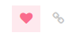

Participando
... precisa estar logado...
Participando de leve...
Assim como no Medium, Facebook, etc. o ambiente não deixa de oferecer os Like's, que são de fato um importante recurso para manter uma chama de vida em meio ao conteúdo estático dos posts. Importante: o significado usual do like nas discussões do DiscussOKBr (e do discuss geral) é "eu endosso esse comentário".

Também, ocasionalmente, surgem pesquisas de opinião, que são posts de tópico ou de resposta
Enfim, participando!
editar ... siga o

http://commonmark.org/help/